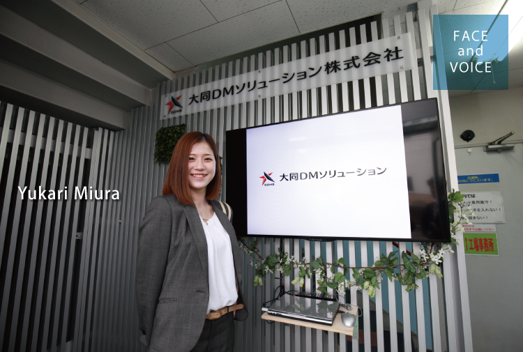

営業本部
名古屋営業グループ
名古屋第二チーム
兼 営業統括部
なでしこプロジェクトチーム
三浦 友香梨
事務から営業へのチャレンジ
５年間ほど営業の事務に携わっていたのですが、２年前に現在の営業の仕事に異動しました。実は会社全体として女性社員の積極的な活用に取り組もうということで、なでしこプロジェクトチームが結成されたんです。その一環として私に「営業をやってみないか」と声が掛かりました。最初は驚きましたし、不安もありました。でも新しいことに挑戦してみたいという思いが募り女性営業を目指すことにしました。現在は私ともう一人、事務の先輩だった女性が営業チームに所属しています。
もっとも、営業と言ってもまだ独り立ちちしているわけではありません。事務業務をこなしながら、日々、営業の勉強中です。当社の営業は製品知識や技術のことなど覚えることも多く、営業見習いとして学んでいる最中です。もともと好奇心旺盛なタイプで技術などにも興味があるので、今は知識が増えていくことがおもしろいですね。それまでわからなかったことが理解できたり、新しく覚えたことを次に活かすことができるので、成長を実感できます。ただ、営業同行でお客様を訪問する際は、とても緊張します。まだまだ一人でお話しできなくて、先輩の隣で必死にメモをとっている状態（笑）。それでも、事務の時はお電話でしかお話ししたことのなかったお客様と直接お会いできるのも楽しいです。
女性営業としてのキャリアを重ねて
私が営業を目指そうと思った理由のひとつは、風通しのいい社風や一人ひとりを尊重してくれる環境が当社にあったからです。営業では経験豊富な先輩方が大勢いらっしゃいますが、全員が優しく丁寧に指導してくださいます。気軽に何でも質問することもできますし、また、若い社員や女性社員も自分の意見を言うことができます。以前に事務の仕事で効率的な進め方や業務改善を上司に提案したことがあるのですが、しっかり対応してくださいました。こうしたステージがあるからこそ、私自身が営業として成長していけるのではと思っています。
一人前の営業を目指す毎日の中で、私の励みになり支えになっているのが３時のおやつタイムです（笑）。ここでおやつを食べながら少しブレークすることで、集中することができます。また女性の先輩と「もっと早く営業の仕事を任せてほしいよね」などと本音を言い合いながら楽しく過ごしています。この業界はもともと女性が少なく、女性営業に抵抗を感じられるお客様もいらっしゃいます。でも、逆に言えばそれだけ目立ちますし、女性ならではのきめ細かな営業が武器になるはずです。まずは、お客様から信頼され、頼りにされる営業になることが目標です。その後は、結婚・出産・育児などを経ながら営業としてのキャリアを重ねていきたいですね。業界の女性営業のパイオニアとして責任感を持って歩んでいきたいと思います。